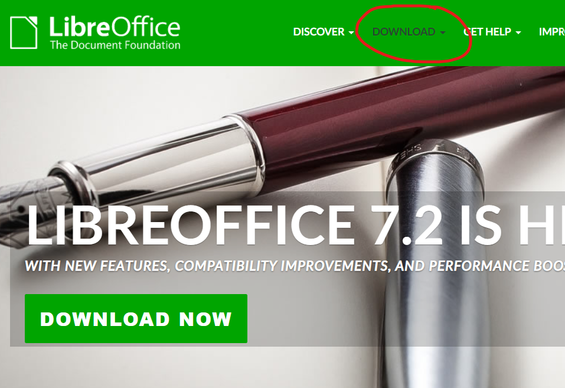
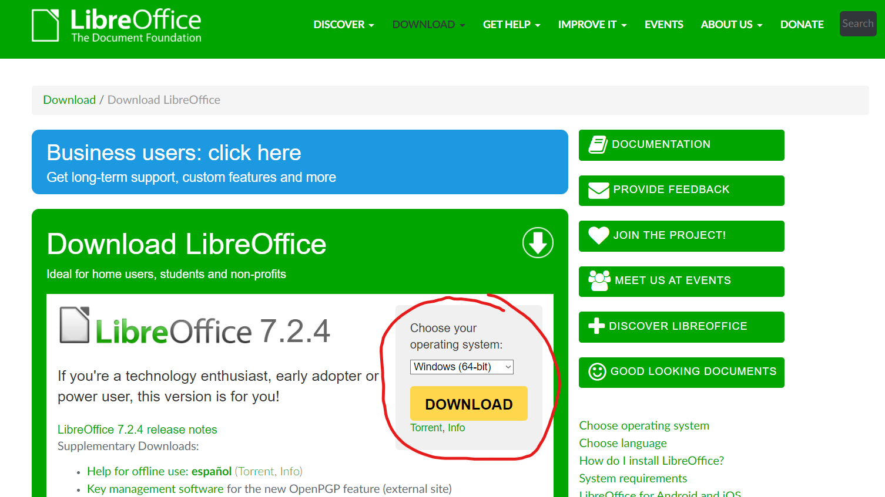
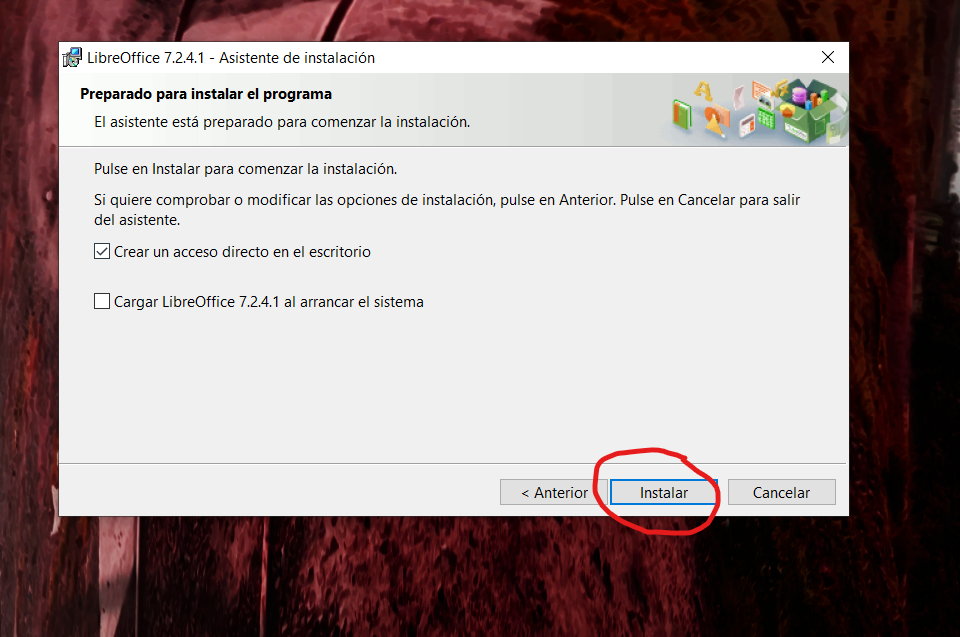

Lo primero que debemos hacer es ir a la página de LibreOffice y dar click en la sección "Descargar"
LibreOffice puede ser descargado para su uso en numerosos sitemas operativos. En este ejemplo, mostraremos la descarga para un sistema operativo Windows. Descargaremos la última versión disponible (debemos seleccionar correctamente la arquitectura de nuestro ordenador):
Una vez descargado, podremos proceder con la instalación. Abrimos el archivo y, si pulsamos la opción "abrir con", LibreOffice se instalará inmediatamente después de terminar de descargarse. Nos saldrán dos opciones de instalación, "Típica" y "Personalizada", con instrucciones de qué hace cada una. En este caso descargaré los componentes predeterminados del programa

Antes de concluir con la instalación, nos aparecerán dos opciones, las cuales nos permiten crear un acceso directo de LibreOffice en el escritorio y ejecutar el programa automáticamente cuando se encienda el ordenador. Después de esto, le damos click en "instalar"
